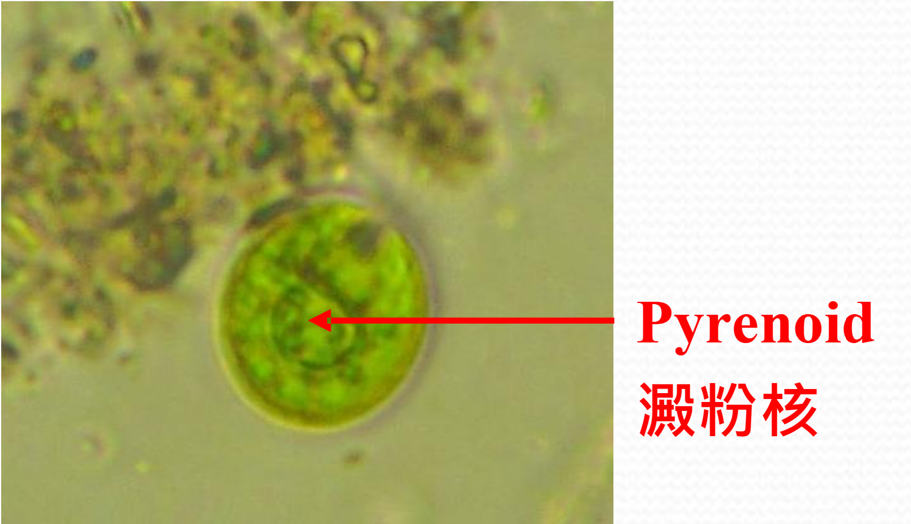
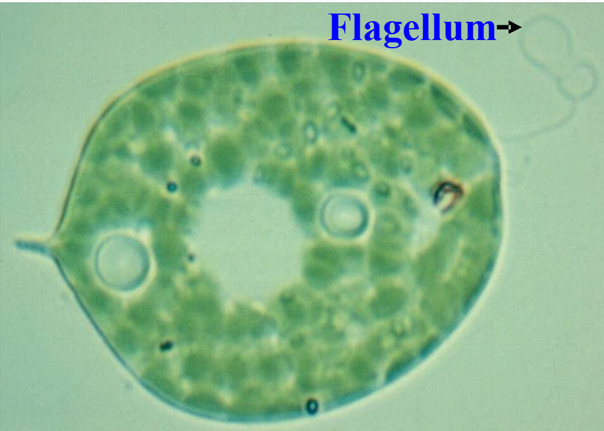

Plants
水蘊草-現象
- 細胞質迴流
水蘊草-表皮細胞

- a.核質
- b.核仁
- c.細胞壁
- d.液泡膜
- e.細胞質
- f.原生質膜
- g.液泡
- h.葉綠體
- i.中膠層
水蘊草-葉緣細胞

- 細胞核
紫背萬年青-觀察

- 質離現象
- 保衛細胞
- 液泡(含色素)
洋蔥內表皮(染色方式)
 |
 |
未染色 |
|
 |
|
雜色體
 |
 |
番茄 |
辣椒 |
澱粉粒
種臍 |
||
 |
||
結晶體
 |
 |
 |
 |
| 印度橡膠樹的葉 |
鴨跖草的莖 |
秋海棠的葉柄 |
|
Algae
藍綠藻門
- Pigmentation:
- Food reserve 藍藻澱粉
- Reproduction:
- 肽聚醣
 |
 |
 |
||
| 藍鼓藻屬 沒有擠在一起 |
色球藻屬 擠在一起半球形 |
微囊藻屬 |
顫藻屬 |
念珠藻屬 |
綠藻門
- Pigmentation:
- Food reserve 澱粉核 (in )
- Reproduction:
- 鞭毛
|  |  |
|
| 單胞藻屬 | 星盤藻屬 定數群體 | 連營藻、柵藻屬 |
| 鼓藻類 | ||
 |
  |
|
| 鼓藻屬 | 新月藻屬 |
微星鼓藻 凹頂鼓藻 |
| 絲狀型 | ||
| 水綿屬 |
||
輪藻門
- Pigmentation & Food: like Chlorophyta
- Reproduction:
- 卵胞
- 藏精器
- 節間
裸藻門
- Pigmentation:
- Food reserve 眼蟲澱粉 ;(NOT in )
- Reproduction: only
- 周皮
|  |  |
|
| 眼蟲屬 |
扁眼蟲屬 |
|
矽藻門
- Pigmentation:
- Food reserve: 金藻昆布多糖 & fat
- Reproduction: primarily by
- cell wall:
- 矽藻土
| Two Major groups | |
| 輻射對稱矽藻 小環藻 圓篩藻 |
兩對稱矽藻 羽紋藻 斜紋藻 異極藻 |
羽紋藻屬
渦鞭毛藻門
- Pigmentation:
- Food reserve:
- Reproduction: usually by
- cell wall: or None
- 紅潮
甲藻屬

角甲藻屬
- (Unequal length)
褐藻門
- Pigmentation:
- Food reserve: 昆布多糖 甘露醇
海帶屬
紅藻門
Good Luck
Fungi
卵菌
水黴菌
| 多核菌絲(2n) |
接合菌
黑黴菌
| 多核菌絲(2n) no septum except 接合 |
() |
子囊菌
- 少部分食用菇是子囊菌
- septa has
- stage(n+n)
- reproduction: or
- 產囊絲鉤: 形成子囊的過渡構造
- 封閉型子囊果(子囊球)
- 瓶型子囊果(錐形瓶狀，子囊殼)
- 盤型子囊果(標本，子囊盤)
盤菌
- (8個一組)
- 菌絲
擔子菌
墨水菇
- (4個一組)
pore fungi
- (跟盤菌一樣)
不完全菌
青黴菌
由小到大:
麴菌
- (在裡面)
- (在裡面)
地衣
整片是
由上到下:
子囊盤
整片是
由上到下:
- (ascus下)
- (中間疏鬆綠色組織)
- (更疏鬆的組織)
- (就是在下面的cortex)